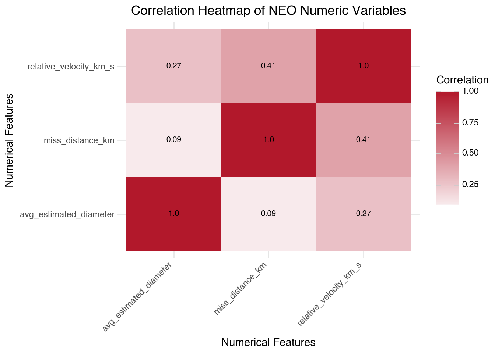
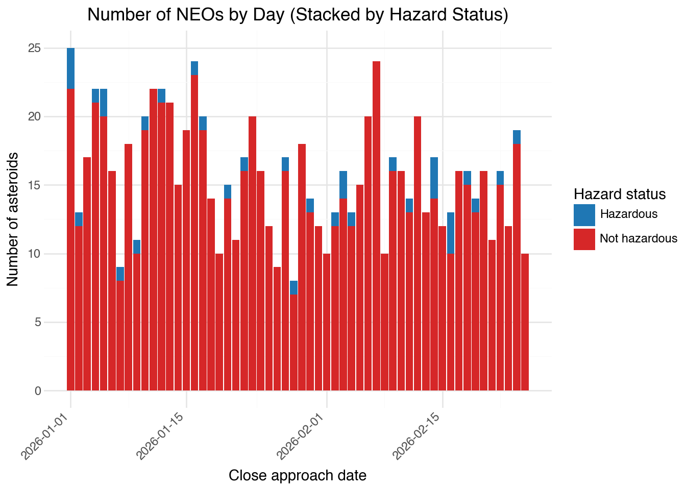

import pandas as pd
import datetime
import numpy as np
import requests
from bs4 import BeautifulSoup
from io import StringIO
import re
import json
import time
from plotnine import *
import warnings
warnings.filterwarnings('ignore')Homework 3 — More APIs, Classification, NLP
JSC370 (Winter 2026)
Learning Goals
- Use two more APIs, get familiar different datasets.
- Train and test logistic regression and random forest for classification.
- Conduct text analysis (natural language processing), topic modeling, and sentiment analysis.
Environment Setup
NASA API (Part 1)
The aim is to get more practice working with APIs and to conduct logistic and random forest classification. We will use and API maintained by NASA for retrieving information about near earth objects (NEOs), asteroids and comets that pass close to Earth. The documentation is available here (click on Asteroids - NeoWs). General information about NEOs can be found here. First you will need an API key for accessing the service. You can get one here - you will need to supply an email address, which can be either your UofT email or a personal email address.
1. (3 points)
The NASA NeoWs Feed API only allows pulls of 7 days of data at a time, so create a loop to pull all NEOs observed so far this year (i.e. start_date and end_date will be for a week but we want to get all asteroids since January 1, 2026).Your query will pull a list of asteroids based on their closest approach date and will have various attributes. Summarize the number of NEOs you pulled, the how many days had NEOs since January 1 of this year.
from datetime import date, timedelta
import time
# NASA API configuration
BASE_URL = "https://api.nasa.gov/neo/rest/v1"
API_KEY = "gyPqOHBIVEUNEGCZ7qqccj8ohbFAGVANiPQpFvPy"
# Use feed endpoint to get all NEOs since January 1, 2026
url = f"{BASE_URL}/feed"
start_date = date(2026, 1, 1)
end_date = date(2026, 2, 25)
all_neos = []
days_with_neos = 0
window_start = start_date
while window_start <= end_date:
# The feed endpoint allows up to 7 days per request
window_end = min(window_start + timedelta(days=6), end_date)
# 1. Build query parameters
params = {
"api_key": API_KEY,
"start_date": window_start.strftime("%Y-%m-%d"),
"end_date": window_end.strftime("%Y-%m-%d"),
}
# 2. Make the GET request
response = requests.get(url, params=params, timeout=30)
print(f"Status Code: {response.status_code}")
print(f"Request URL: {response.url}")
if response.status_code != 200:
window_start = window_end + timedelta(days=1)
time.sleep(0.1)
continue
# 3. Parse the JSON response
try:
payload = response.json()
except ValueError:
window_start = window_end + timedelta(days=1)
time.sleep(0.1)
continue
# 4. Extract NEOs by day and append to all_neos
neos_by_day = payload.get("near_earth_objects", {})
for obs_date, neos in neos_by_day.items():
if neos:
days_with_neos += 1
for neo in neos:
neo["close_approach_date"] = obs_date
all_neos.extend(neos)
# 5. Move to the next 7-day window
window_start = window_end + timedelta(days=1)
time.sleep(0.1)
print(f"Total NEOs pulled since 2026-01-01: {len(all_neos)}")
print(f"Number of days from {start_date} to {end_date}: {(end_date - start_date).days + 1}")
print(f"Number of days with at least one NEO: {days_with_neos}")Status Code: 200
Request URL: https://api.nasa.gov/neo/rest/v1/feed?api_key=gyPqOHBIVEUNEGCZ7qqccj8ohbFAGVANiPQpFvPy&start_date=2026-01-01&end_date=2026-01-07
Status Code: 200
Request URL: https://api.nasa.gov/neo/rest/v1/feed?api_key=gyPqOHBIVEUNEGCZ7qqccj8ohbFAGVANiPQpFvPy&start_date=2026-01-08&end_date=2026-01-14
Status Code: 200
Request URL: https://api.nasa.gov/neo/rest/v1/feed?api_key=gyPqOHBIVEUNEGCZ7qqccj8ohbFAGVANiPQpFvPy&start_date=2026-01-15&end_date=2026-01-21
Status Code: 200
Request URL: https://api.nasa.gov/neo/rest/v1/feed?api_key=gyPqOHBIVEUNEGCZ7qqccj8ohbFAGVANiPQpFvPy&start_date=2026-01-22&end_date=2026-01-28
Status Code: 200
Request URL: https://api.nasa.gov/neo/rest/v1/feed?api_key=gyPqOHBIVEUNEGCZ7qqccj8ohbFAGVANiPQpFvPy&start_date=2026-01-29&end_date=2026-02-04
Status Code: 200
Request URL: https://api.nasa.gov/neo/rest/v1/feed?api_key=gyPqOHBIVEUNEGCZ7qqccj8ohbFAGVANiPQpFvPy&start_date=2026-02-05&end_date=2026-02-11
Status Code: 200
Request URL: https://api.nasa.gov/neo/rest/v1/feed?api_key=gyPqOHBIVEUNEGCZ7qqccj8ohbFAGVANiPQpFvPy&start_date=2026-02-12&end_date=2026-02-18
Status Code: 200
Request URL: https://api.nasa.gov/neo/rest/v1/feed?api_key=gyPqOHBIVEUNEGCZ7qqccj8ohbFAGVANiPQpFvPy&start_date=2026-02-19&end_date=2026-02-25
Total NEOs pulled since 2026-01-01: 882
Number of days from 2026-01-01 to 2026-02-25: 56
Number of days with at least one NEO: 56Summary:
Since 2026-01-01, by the end of 2026-02-25, 882 NEOs were pulled. From 2026-01-01 to 2026-02-25, there are 56 days, and 56 of those days had NEOs.
2. (5 points)
Extract information on estimated_diameter, is_potentially_hazardous_asteroid, miss_distance, and relative_velocity. Create a variable for avg_estimated_diameter (take the mean of min and max). Make a summary table of these variables, a correlation heatmap of the numeric variables, and create a stacked barplot of the number of asteroids by day, distinguishing those that are hazardous is_potentially_hazardous_asteroid.
extracted_rows = []
for neo in all_neos:
km_info = neo.get("estimated_diameter", {}).get("kilometers", {})
diameter_min = km_info.get("estimated_diameter_min")
diameter_max = km_info.get("estimated_diameter_max")
close_approach = neo.get("close_approach_data", [])
if close_approach:
approach_0 = close_approach[0]
miss_distance_km = approach_0.get("miss_distance", {}).get("kilometers")
relative_velocity_kps = approach_0.get("relative_velocity", {}).get("kilometers_per_second")
else:
miss_distance_km = None
relative_velocity_kps = None
extracted_rows.append({
"neo_id": neo.get("id"),
"neo_name": neo.get("name"),
"close_approach_date": neo.get("close_approach_date"),
"estimated_diameter_min_km": diameter_min,
"estimated_diameter_max_km": diameter_max,
"is_potentially_hazardous_asteroid": neo.get("is_potentially_hazardous_asteroid"),
"miss_distance_km": miss_distance_km,
"relative_velocity_km_s": relative_velocity_kps
})
neo_df = pd.DataFrame(extracted_rows)
# Convert numeric columns from strings to numbers
numeric_cols = [
"estimated_diameter_min_km",
"estimated_diameter_max_km",
"miss_distance_km",
"relative_velocity_km_s"
]
neo_df[numeric_cols] = neo_df[numeric_cols].apply(pd.to_numeric, errors="coerce")
# Create a new variable for the average estimated diameter
neo_df["avg_estimated_diameter"] = (
neo_df["estimated_diameter_min_km"] + neo_df["estimated_diameter_max_km"]
) / 2
neo_df_derived = neo_df[[
"neo_id",
"neo_name",
"close_approach_date",
"is_potentially_hazardous_asteroid",
"miss_distance_km",
"relative_velocity_km_s",
"avg_estimated_diameter"
]].copy()
# Encode hazardous asteroid indicator as 0/1 for numeric analysis
neo_df_derived["is_potentially_hazardous"] = neo_df_derived["is_potentially_hazardous_asteroid"].astype(int)
neo_df_derived.head()| neo_id | neo_name | close_approach_date | is_potentially_hazardous_asteroid | miss_distance_km | relative_velocity_km_s | avg_estimated_diameter | is_potentially_hazardous | |
|---|---|---|---|---|---|---|---|---|
| 0 | 2026663 | 26663 (2000 XK47) | 2026-01-07 | True | 2.025407e+07 | 17.184795 | 1.003558 | 1 |
| 1 | 54105509 | (2021 AM5) | 2026-01-07 | False | 2.464357e+07 | 10.693029 | 0.040137 | 0 |
| 2 | 54248949 | (2022 EO) | 2026-01-07 | False | 4.104900e+07 | 7.051860 | 0.005439 | 0 |
| 3 | 54317205 | (2022 UE3) | 2026-01-07 | False | 4.570810e+07 | 8.209910 | 0.051469 | 0 |
| 4 | 54417170 | (2023 XM15) | 2026-01-07 | False | 5.819989e+06 | 6.889580 | 0.061879 | 0 |
# Summary table for required Q2 variables (+ 0/1 hazardous indicator)
summary_vars = [
"avg_estimated_diameter",
"miss_distance_km",
"relative_velocity_km_s",
"is_potentially_hazardous",
]
summary_table = (
neo_df_derived[summary_vars]
.describe()
.T[["count", "mean", "std", "min", "25%", "50%", "75%", "max"]]
.rename(columns={"50%": "median"})
)
summary_table["missing"] = neo_df_derived[summary_vars].isna().sum()
summary_table = summary_table.reset_index().rename(columns={"index": "variable"})
summary_table| variable | count | mean | std | min | 25% | median | 75% | max | missing | |
|---|---|---|---|---|---|---|---|---|---|---|
| 0 | avg_estimated_diameter | 882.0 | 7.894121e-02 | 1.451230e-01 | 0.001660 | 1.998461e-02 | 3.718299e-02 | 7.473820e-02 | 2.165422e+00 | 0 |
| 1 | miss_distance_km | 882.0 | 2.476274e+07 | 2.261249e+07 | 43043.346341 | 5.014621e+06 | 1.711277e+07 | 4.181465e+07 | 7.472261e+07 | 0 |
| 2 | relative_velocity_km_s | 882.0 | 1.234448e+01 | 6.516253e+00 | 1.220285 | 7.388070e+00 | 1.121601e+01 | 1.616781e+01 | 4.118599e+01 | 0 |
| 3 | is_potentially_hazardous | 882.0 | 3.854875e-02 | 1.926261e-01 | 0.000000 | 0.000000e+00 | 0.000000e+00 | 0.000000e+00 | 1.000000e+00 | 0 |
heatmap_vars = [
"avg_estimated_diameter",
"miss_distance_km",
"relative_velocity_km_s",
]
corr_matrix = neo_df_derived[heatmap_vars].corr()
corr_long = (
corr_matrix
.reset_index()
.melt(id_vars="index", var_name="variable_2", value_name="correlation")
.rename(columns={"index": "variable_1"})
)
corr_long["corr_label"] = corr_long["correlation"].round(2)
(
ggplot(corr_long, aes(x="variable_1", y="variable_2", fill="correlation"))
+ geom_tile()
+ geom_text(aes(label="corr_label"), size=8, color="black")
+ scale_fill_gradient2(low="#2166ac", mid="white", high="#b2182b", midpoint=0)
+ labs(
title="Correlation Heatmap of NEO Numeric Variables",
x="Numerical Features",
y="Numerical Features",
fill="Correlation"
)
+ theme_minimal()
+ theme(axis_text_x=element_text(angle=45, ha="right"))
)
plot_df = neo_df_derived.copy()
plot_df["close_approach_date"] = pd.to_datetime(plot_df["close_approach_date"])
plot_df["hazard_status"] = np.where(
plot_df["is_potentially_hazardous_asteroid"],
"Hazardous",
"Not hazardous"
)
(
ggplot(plot_df, aes(x="close_approach_date", fill="hazard_status"))
+ geom_bar(position="stack")
+ labs(
title="Number of NEOs by Day (Stacked by Hazard Status)",
x="Close approach date",
y="Number of asteroids",
fill="Hazard status"
)
+ scale_fill_manual(values=["#1f77b4", "#d62728"])
+ theme_minimal()
+ theme(axis_text_x=element_text(angle=45, ha="right"))
)
3. (6 points)
Are larger NEOs more hazardous? Are faster NEOs more hazardous? Create two histograms to explore these questions, and conduct two-sample t-tests. Is the relationship between diameter and velocity different between hazardous and non-hazardous NEOs? Create a scatterplot to explore this. Summarize your results.
4. (5 points)
Split the data into 70% train and 30% test, and fit a logistic regression model on train to see if we can predict on test whether an asteroid is hazardous based on its attributes (include diameter, velocity, miss distance). Summarize and interpret the results (include a confusion matrix, accuracy, precision, recall, and F1; plot the ROC curve).
5. (5 points)
Repeat 4 but using random forest. Summarize and include a comparison of your results in 4.
CFPB API (Part 2)
The Consumer Financial Protection Bureau maintains a database of customer complaints. We will use natural language processing to see if there are any trends in the reported consumer’s narrative description of the complaints. The data can be acquired here. We will use the API to get data.
6. (3 points)
Use the API to get consumer complaint narratives (i.e. has_narrative) from the last 3 months (i.e. date_received_min is November 1, 2025) across all product categories. I suggest using the csv format. Please note this is a very large dataset so may take some time to query (you can use a longer timeout). Once you have pulled the data, summarize the dimensions and variables. Create a bar chart of complaint counts by product category.
7. (2 points)
Tokenize the complaints (consumer complaint narrative) and count the number of tokens. Make a plot of the top 20 tokens. Summarize.
8. (3 points)
Remove stopwords, including numeric tokens, special characters combinations, and customize to remove any other words that look strange. After cleaning, what words appear as the most frequent? Create a plot of the 20 most common complaint tokens in your cleaned data and summarize.
9. (10 points)
Use Latent Dirichlet Allocation (LDA) topic modeling to discover topics in the complaint narratives. First, use perplexity and log-likelihood on a held-out sample of 50,000 to evaluate different numbers of topics (e.g., 2 to 10) and select an appropriate number. Plot perplexity and log-likelihood as a function of the number of topics. Then fit an LDA model with your chosen number of topics. Display the top 10 words for each topic. Do the discovered topics align with the actual product categories? Create a visualization to compare. Summarize and interpret your findings.
10. (5 points)
Use the vader lexicon to conduct sentiment analysis on the word tokens to determine if consumer complaints express positive, neutral, or negative sentiments. Create a histogram of the sentiment scores, and make a barplot to show the counts of tokens by sentiment category. Make another barplot to compare sentiment category counts by product categories. Make another barplot to show which words have top positive sentiment scores and which words have most negative sentiment scores. Summarize and interpret your results.
11. (2 points)
Conduct sentence-level tokenization, summarize the number of sentences, and the average number of sentences by complaint.
12. (4 points)
Conduct sentiment analysis of the sentence tokens. Like above, visualize the histogram of the sentiment scores, categorize sentiments into negative, neutral, positive and visualize counts with a barplot as well as a barplot by product categories. Interpret, summarize, and discuss differences from word token sentiment analysis in 10.